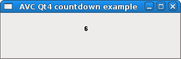
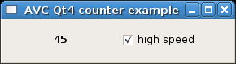
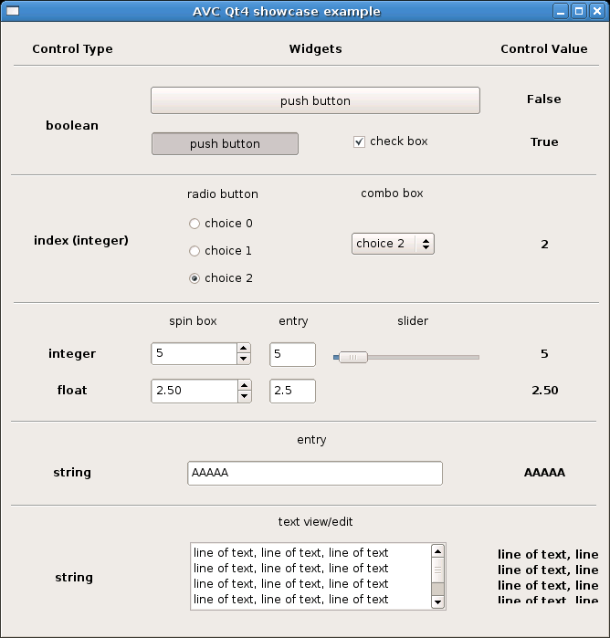
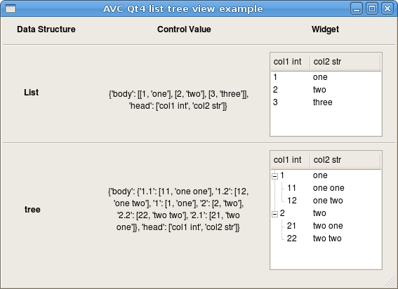
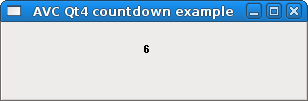
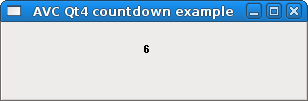

Current: 0.10.0
Released: 24-Apr-2015
License: GPL
Common Requirements: python 2.2 - <3.0
GTK2+ requirements: Pygtk 2.8 - 2.10 GTK3+ requirements: PyGObject >=3.10 Qt requirements: Pyqt v3 - v4 Tk requirements: Tkinter 2.4 wxWidgets requirements: wxPython 2.6 - 2.8 Swing requirements: jython 2.5.1
Author: Fabrizio Pollastri
Quick start examples: GTK2+, GTK3+, Qt, Tk, wxWidgets, Swing. User Manual
Release Notes
Changelog
All News
AVC-Simplifying your GUI Code
GTK2+ examples
GTK3+ examples
Qt examples
Tk examples
wxWidgets examples
Swing examples
Source: - current avc-0.10.0.tar.gz - all sources
Packages: - Arch Linux - Debian - Ubuntu
Quick start examples: - GTK2+ spinbutton + glade file GTK3+ spinbutton + glade file ui file - Qt spinbox + ui file - Tk spinbox + tcl file - wxWidgets spincontrol + xrc file - Swing spinner
All examples




 
